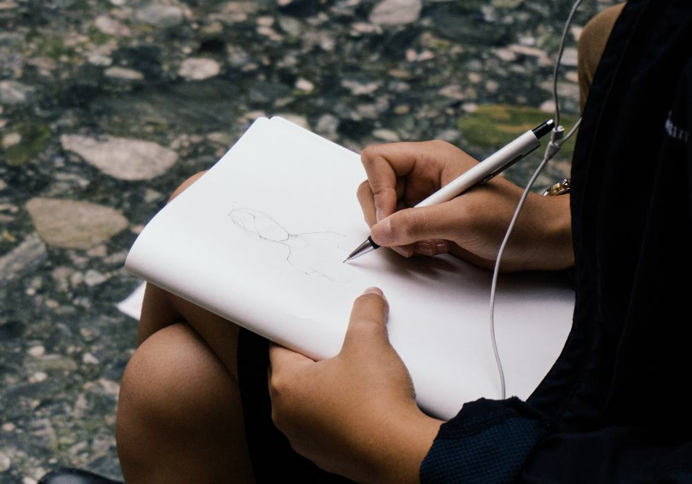

Hoggin
“Tudo é possível quando você acredita.”
Um espaço para quem sente que o celular está roubando tempo demais do dia. Aqui você encontra orientação para escolher, começar e manter um hobby de verdade, feito com as mãos, com calma e sem tela.
Ver primeiros passos
O problema que queremos resolver
Boa parte do tempo que passamos olhando para o celular não é escolhida conscientemente. Apenas preenchemos o vazio entre uma tarefa e outra com rolagem infinita.
Com o tempo, isso toma espaço de atividades que fariam mais bem: aprender algo novo, criar com as mãos e sair de casa.
O Hoggin existe para lembrar que dá para trocar parte desse tempo por um hobby e tornar esse primeiro passo mais simples.
Nosso objetivo
Ajudar qualquer pessoa a escolher, começar e manter um hobby novo, longe da tela e no seu próprio ritmo.
Entenda o problema